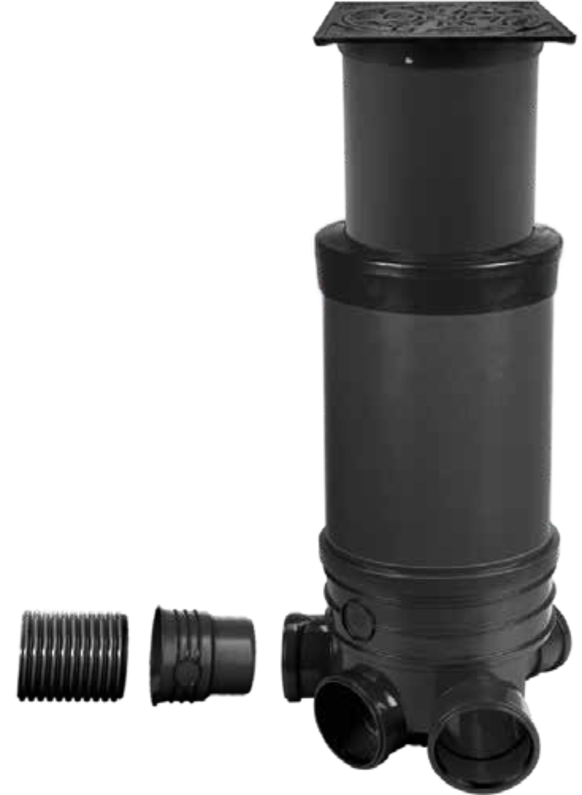

Inspection Chamber Systems
Complete modular inspection chamber solutions designed to provide convenient access to underground building sewerage and drainage networks, including rainwater management applications.

A complete system for underground access.
Plastic inspection chamber systems are an essential component of underground sewerage and drainage installations. Their modular construction, compatibility of system components and ease of assembly provide practical solutions for inspection and maintenance access.
The system comprises compatible chamber bases, smooth or corrugated rising pipes and covers. Available configurations allow the chamber height and arrangement to be adapted to installation requirements.
Where Inspection Chambers are used
- Building sewerage systems
- Building and site drainage networks
- Rainwater and groundwater drainage
- Inspection and maintenance access
- Drainage wells and wells with sumps
Suitable chamber configurations and accessories can be selected according to the application and installation requirements.
Three Chamber Types. One Complete System.
Dadex offers three inspection chamber configurations, each designed around compatible chamber bases, rising pipes and covers.
Corrugated RCP 315
Chamber system with corrugated RCP 315 rising pipe.
Smooth RSP 400
Chamber system with smooth RSP 400 rising pipe.
Corrugated RCP 425
Chamber system with corrugated RCP 425 rising pipe.
Available chamber bases include straight and multi-inlet configurations, depending on the type and connection requirements.
Everything works together as one system.
A modular range of compatible components provides flexibility in chamber configuration and installation.
| Chamber Base Units | Available in straight and multi-inlet configurations for Types 315, 400 and 425. |
|---|---|
| Rising Pipes | Corrugated rising pipes for Types 315 and 425, and smooth rising pipes for Type 400. |
| Telescopes & Covers | Different telescope, telescopic cover and cover configurations to suit the respective chamber systems. |
| Concrete Cones | Concrete cone components are available for relevant chamber configurations. |
| Seals & Accessories | Compatible seals, adapters, reducing gaskets and other installation accessories. |
| Additional Components | PP bottoms, telescopic pipes and street rain inlet components for relevant systems. |
Specifications & System Characteristics
Key materials, configurations and technical characteristics of the inspection chamber range.
| Chamber Types | 315, 400 and 425. |
|---|---|
| Chamber Base Material | Polypropylene (PP). |
| Smooth Rising Pipe | PVC-U, Type 400 (RSP 400). |
| Corrugated Rising Pipes | RCP 315 and RCP 425. |
| Chamber Base Configurations | Straight and multi-inlet chamber bases, with compatible seals. |
| Cover Options | A15, B125 and D400 classifications are identified for relevant system components. |
| Chamber Height | The chamber height can be adjusted to installation requirements using compatible rising pipe arrangements. |
Component dimensions, connection sizes and load classifications vary by product type. Refer to the relevant technical documentation for detailed specifications.
Designed for practical installation.
The modular inspection chamber system combines precision-manufactured components with practical installation features for underground sewerage and drainage applications.
Key Features & Benefits
- High precision of workmanship
- High resistance to mechanical damage
- Lightweight components for quick installation
- Adjustable chamber height
- Smooth chamber base surfaces help reduce the possibility of blockage
- Precision chamber bases and seals reduce the risk of sewage exfiltration
- Limited risk of groundwater infiltration
- Compatibility with KG pipes and Magnacor systems
Flexible configuration for efficient installation.
The modular system allows the chamber arrangement and height to be configured according to installation requirements.
Installation Considerations
- Select the appropriate chamber type and base configuration.
- Use compatible rising pipes, seals and accessories.
- Adjust the rising pipe arrangement to the required chamber height.
- Select the appropriate cover configuration for the installation conditions.
Follow the relevant product documentation for installation procedures and component compatibility.
Technical Resources
Access product information and technical documentation for the inspection chamber system.


Let's find the right inspection chamber configuration for your project.
Contact Dadex for product information, technical guidance and project-related enquiries.